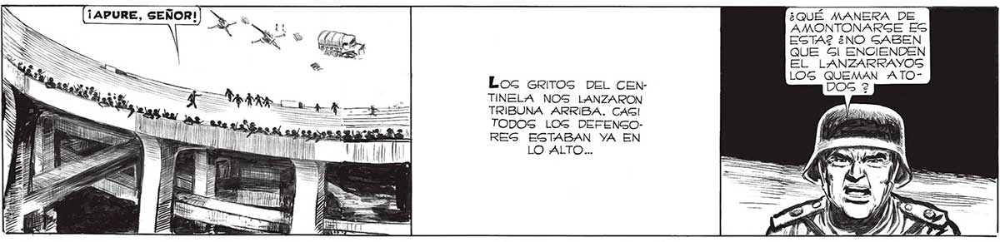
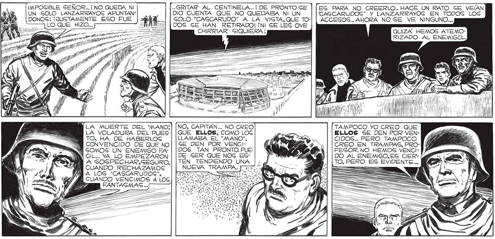

LS ¿QUÉ MANERA DE MN AMONTONARGE ES EGTA? ¿NO GABEN QUE Gl ENCIENDEN EL LANZARRAYOS LOGS QUEMAN ATOLos GrIiTOS DEL CEnNTINELA NOS LANZARON TRIBUNA ARRIBA. CAGI TODOS LOG DEFENGORES ESTABAN YA EN LO ALTO... GRITAR AL CENTINELA.. ¡DE PRONTOSGE | [EG PARA NO CREERLO.. HACE UN RATO SE VELAN DIO CUENTA QUE NO QUEDABA NI UN 'CASCARUDOS” Y LANZARRAYOS EN TODOS LOG DONOG! ¡JUSTAMENTE ESO FUE GOLO “CASCARUDO” A LA VIGTA, QUE TO-| | ACCESOS... AHORA NOSE VE NINGUNO... LO QUE HIZO... DOS SE HAN RETIRADO! ¡NI SE LES OVE : A AA —_— CHIRRIAR SIQUIERA ! QUIZA HEMOS ATEMOy" WAR MI RIZADO AL ENEMIGO... IMPOSIBLE SEÑOR...¡ NO QUEDA NI UN SOLO LANZARRAYOS APUNTANNS y e ” RO Y Lo 4 | y AO NLA MUERTE DEL 'MANO!:| LA VOLADURA DEL PUESTO, HA DE HABERLOS CONVENCIDO DE QUE NO RW SOMOS UN ENEMIGO FA BY CIL... YA LO EMPEZARON A GOGPECHAR.SEGURO, CUANDO RECHAZAMOS JA LOS *CASCARUDOS”, CUANDO VENCIMOS A LOG NO, CAPITÁN... NO GREO QUE ELLOS, COMO LOG LLAMABA EL “MANO”, SE DEN POR VENCIDOS TAN PRONTO. PUE: DE GER QUE NOG ESTÉN TENDIENDO UNA y TAMPOCO YO CREO QUE ELLOS SE DEN POR VENCIDOS... PERO TAMPOCO CREO EN TRAMPAS, PROFESOR. NO HEMOS VENCIDO AL ENEMIGO, ES CIER- [4 TO, PERO ES EVIDENTE ... G = ¿NV to == F

